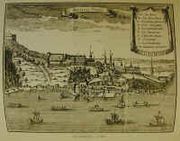
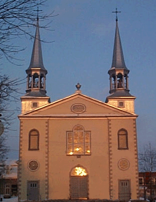

Contexte
La ville de Québec en 1700


Pierre le cadet ChoretPierre Choret
Source : 3e génération — Pierre — enfance
1700–1800
Pierre Choret quitte Beauport pour l'île de Montréal; ses fils épousent deux sœurs Lemay au Sault-au-Récollet. En 1759, la Conquête fait de la colonie une possession britannique.

Pierre le cadet ChoretPierre Choret
Source : 3e génération — Pierre — enfance
Fils aîné de Mathieu; il meurt à Sainte-Croix le 15 juin 1716.
Le 5 avril 1701 Robert achète à la veuve de Mathieu Amiot la seigneurie Pointe-aux-Bouleaux près de Ste-Croix de Lotbinière. Il doit en laisser le quart à Charles Amiot par jugement de la Prévoté de Québec le 14 mai 1708 et vend le reste à Pierre-Noel Le Gardeur le 21 août 1714. page d'origine
Robert décède le 15 juin 1716 à Ste-Croix à l'âge de 68 ans. page d'origine
Le 4 août 1701, c'est la signature de « la paix de Montréal » avec les Cinq Nations iroquoises, un traité qui brise la coalition anglo-iroquoise. Les raids entre Anglais et Français n'en continuent pas moins. Le 15 mai 1702 la deuxième guerre intercoloniale commence. En 1703, Philippe Rigaud de Vaudreuil devient gouverneur général, jusqu'en 1725. Le Conseil souverain devient le Conseil supérieur. En 1710, Michel Bégon de la Picardière devient intendant de la Nouvelle-France, jusqu’en 1726. page d'origine
Pierre le cadet ChoretPierre Choret
Sources : 3e génération — Pierre — vie · 3e génération — Pierre — enfance
On ne sait pas exactement où vivaient Pierre le cadet et Marie-Anne, mais tous leurs enfants sont baptisés à Beauport.
![Voici une partie de la carte dressée en 1709 par Gédéon de Catalogne pour le compte du gouvernement. On y voit en haut, dans le coin droit, la terre de l'ancêtre Mathieu, près du Fleuve. Mais, à gauche de la carte, on voit deux autres terres appartenant à des Choret. Peut-on dire que ce sont les emplacements occupés par Pierre le cadet, et les descendants de ses deux frères jumeaux, décédés en 1701? Il faudrait trouver des documents l'établissant. En plein centre de la carte, on voit le Trait-Carré de Charlesbourg. Celui plus au nord est le Bourg-Royal, on y remarque des Choret établis de chaque côté. Était-ce originalement la terre concédée à Mathieu par les Jésuites, dont la partie nord est allé à un de ses fils, et dont le centre a été vendue pour construire le Bourg-Royal ? Beaucoup de questions, et peu de réponses sans recherches plus poussées. Ce qui, quand même, m'incline à penser que mon hypothèse est plausible, c'est que, dans le projet de la Ville de Québec pour uniformiser le nom de ses rues, suite aux fusions municipales de 2000, on suggère de nommer "Mathieu Choret" une rue située à peu près là où se trouve la terre Choret en haut, à gauche. Jusqu'à date ce projet n'est pas encore réalisé. Pour terminer le survol de la carte, on y trouve, marqué d'une flèche, la terre des Turcot. Un des fils de Pierre le cadet, Pierre, épousera Angélique Turcot de Charlesbourg en 1712. On peut donc voir là où elle vivait peu de temps avant son mariage. Ce couple migrera vers Montréal quelques années plus tard. On voit aussi sur la carte, longeant le Trait-Carré de Charlesbourg, entourée d'un rectangle rouge, la terre des Pageot. C'est celle de l'ancêtre d'une autre lignée, Thomas Pageau, dont les descendants vivront presque tous essentiellement à Charlesbourg, jusqu'à Marie-Georgianna Pageau qui y naîtra, mais migrera vers Montréal au début du 20ème siècle.](../charettegen1/images/catalogne_small.jpg)
Nous avons la certitude que Pierre et Marie-Anne passent toute leur vie à Beauport puisque tous leurs enfants y sont baptisés. Mais nous ne connaissons pas leur lieu de résidence exacte. Nous savons que trois des sept enfants de Mathieu Choret sont demeurés à Beauport, les jumeaux et Pierre le cadet. Lequel a pris la terre paternelle? Ou la terre est-elle assez grande pour être divisée entre eux, permettant à chacun d'y faire vivre sa famille? Lequel des fils a gardé leur mère Sébastienne jusqu'à son décès en 1698? page d'origine
Sources : 2e génération — Pierre le Cadet — famille · ZoneCharette — page d'accueil — terre
Dans la première église de Saint-Charles-Borromée. Angélique, fille de Jean Turcot et de Marie Rose, est née le 6 septembre 1691.

Le 1 février 1712, Pierre Choret épouse Angélique Turcot dans la paroisse Saint-Charles-Borromée de Charlesbourg. page d'origine
Jean Turcot et Marie Rose ont plusieurs enfants, dont notre aïeule Angélique, née le 6 septembre 1691. Ils s' installent sur une terre du Trait-Carré de Charlesbourg. Jean semble un homme important puisque des gens influents sont présents au baptême de sa fille Angélique: son parrain est le capitaine des gardes de monsieur le comte de Frontenac, et sa marraine, la femme de monsieur de Villeray, premier conseiller au Conseil Souverain. page d'origine
Source : 3e génération — Pierre — vie
Il s'installe à la « Coste St-Michel »; il est le premier des enfants de Pierre le cadet à partir pour Montréal.
Vers 1717, Pierre prend une grande décision: quitter la région de Québec pour celle de Montréal. Nous n'en connaissons pas les raisons, mais elles sont probablement économiques. Montréal est devenu le centre économique du Canada, son expansion rapide attire les jeunes. Ce déménagement constitue toute une expédition, plus de 250 kilomètres, aucun chemin carrossable, de jeunes enfants et, sûrement, les effets domestiques essentiels pour l'installation de la famille dans son nouveau logement. Voyagent-ils par le fleuve? Fort probablement, le fleuve Saint-Laurent demeure encore à l'époque la principale voie d'accès, et ce depuis les débuts de la colonie. page d'origine
Pierre installe sa famille dans la "Coste St-Michel". La paroisse Notre-Dame tient les registres pour tout le territoire de l'île. Le baptême de deux enfants y sont enregistrés en 1718 et en 1719. Les baptêmes des suivants se retrouvent dans les registres de la paroisse St-Laurent, qui ouvre en 1720, et le dernier dans les registres de la paroisse du Sault-au-Récollet, qui ouvre en 1736. Il y a une exception: trois enfants sont baptisés, de 1725 à 1728, dans la paroisse Notre-Dame. Selon les actes de baptême des enfants, Pierre et Angélique habitent dans la Coste St-Michel, finalement rattachée à la paroisse Sault-au-Récollet. Leurs voisins et amis sont le couple Ignace Lemay - Anne Lecompte, dont deux filles épouseront les deux fils Choret. Plusieurs Turcot sont aussi habitants de la Coste St-Michel, dont trois frères d'Angélique: Jean, Louis-Gabriel et Pierre, ainsi que leur père. page d'origine
Pierre est le premier des enfants de Pierre le Cadet à basculer vers Montréal mais trois de ses plus jeunes frères, Ignace, Michel et Jean-Baptiste, et une sœur, Marie-Joseph, vont le suivre, et même s'y marier. On retrouve une ordonnance du 7 octobre 1726 concernant la saisie d'un canot rempli de peaux de castors, et d'une amende remise au fautif, par des frères Choret travaillant comme gardes pour la Compagnie des Indes. Il est sûr que, pour les jeunes hommes de l'époque, l'avenir est vers l'Ouest. Même le gouvernement le croit, puisqu'il envoie La Vérendrye en expédition toujours plus vers l'Ouest, il s'arrêtera aux pieds des Rocheuses. page d'origine
Sources : 3e génération — Pierre — vie · 3e génération — Pierre
Les sources diffèrent
JOSEPH est baptisée à Montréal le 26 septembre 1719. Ses parrains sont François Poirier et Marie-Joseph Fayer. Il se marie le 8 janvier 1742 à Sault-au-Récollet avec Marie-Anne Lemay, fille d'Ignace et de Marie-Anne Lecompte dite la Gimaudière. Il décède le 29 août 1792 à Sault-au-Récollet. page d'origine
Sources : 4e génération — Pierre et Marie Lemay · 4e génération — Pierre et Marie Lemay — descendance · 3e génération — Pierre — descendance
En 1735, de Québec à Montréal, sur la rive nord du Saint-Laurent, on inaugure le Chemin du Roy (sans asphalte évidemment), un chantier de quatre ans comprenant 13 ponts. Désormais, on peut aller d’une ville à l’autre avec un seul cheval, en quatre jours page d'origine
Sources : 3e génération — Pierre — vie · 4e génération — Pierre et Marie Lemay — vie
Fils de Jacques Sanfaçon dit Consigny et de Jeanne Bijolet, né en France (diocèse de Langres); il aurait été soldat.
Les sources diffèrent
Prénom de l'épouse.
Fils de Jacques Sanfaçon dit Consigny et de Jeanne Bijolet, né en France dans le diocèse de Langres, François se marie à Notre-Dame de Québec avec Marie-Anne Ducharme le 21 novembre 1735. page d'origine
François Sanfaçon dit Consigny aurait été un soldat. Les Consigny ont vécu dans le bas du fleuve, St-Jean-Port-Joli, Rivière-Ouelle, St-Pascal, puis à Québec et Montréal. page d'origine
Avec lui disparaît le dernier des Choret de la première génération née en Nouvelle-France.
Pierre décède le 5 mai 1736 à Beauport, l'acte de sépulture est signée par Pierre Grenier. Il a 74 ans, avec lui s'éteint le dernier membre de la première génération de Choret née en Nouvelle-France. Près de quatre-vingt-dix ans s'étaient écoulés depuis que ses parents s'y étaient installés en 1647 page d'origine
Pierre le cadet ChoretPierre Choret
Sources : 2e génération — Pierre le Cadet — famille · 3e génération — Pierre — vie
Au Sault-au-Récollet : Joseph épouse Marie-Anne Lemay, Pierre épouse Marie Lemay, filles d'Ignace Lemay.
En 1742, les deux fils de Pierre parvenus à l'âge adulte, Pierre et Joseph, se marient le même jour à deux sœurs Lemay, au Sault-au-Récollet, page d'origine
Pierre Choret épouse à Charlesbourg, le 1 février 1712, Angélique Turcot. Seuls deux de leurs fils atteignent l'âge adulte, Pierre et Joseph. Les frères Choret épousent des sœurs Lemay. page d'origine
Sources : 3e génération — Pierre — vie · 4e génération — Pierre et Marie Lemay · 4e génération — Pierre et Marie Lemay — descendance
Marie-Anne décède le 23 janvier 1748 à Beauport, elle a 83 ans et réside sûrement avec un de ses fils ou filles qui sont demeurés à Beauport. page d'origine
Sources : 2e génération — Pierre le Cadet — famille · 3e génération — Pierre — vie
Les sources diffèrent

Le 23 mars 1749, Jean-Baptiste naît au Sault-au-Récollet, comme son père avant lui. C'est son grand-père, Pierre, qui avait quitté la région de Québec pour venir s'installer sur l'île de Montréal. page d'origine
Jean-Baptiste ChauretJoseph Choret
Sources : 5e génération — Jean-Baptiste — vie · 4e génération — Pierre et Marie Lemay — descendance · 5e génération — Jean-Baptiste — cle1
Il a 59 ans et a vu naître ses premiers petits-enfants. Sa veuve Angélique se remarie en 1750 avec Jacques Messier.
Pierre voit naître ses premiers petits-enfants avant de décéder, le 22 juillet 1749, au Sault-au-Récollet, à l'âge de 59 ans. Sa veuve Angélique se remarie, le 5 octobre 1750, à Jacques Messier au Sault-au-Récollet. Ce dernier y décède le 10 février 1764. Nous ignorons encore la date de décès d'Angélique. page d'origine
Source : 3e génération — Pierre — vie
Jean-Baptiste passe ses premières années en Nouvelle-France; en 1759 tout change. La Proclamation royale est lue à Québec le 10 août 1764.
Jean-Baptiste passe les premières années de sa vie en Nouvelle-France, mais en 1759 tout bascule... pour en savoir plus >>> page d'origine
Le 10 août 1764, sur la Place d'Armes de Québec, devant les troupes en armes et une nombreuse population, la Proclamation Royale est lue. C'est la première constitution anglaise dont est dotée la colonie qui s'appelle maintenant "Province of Quebec". Débute alors le régime anglais... pour en savoir plus >>> page d'origine
Jean-Baptiste ChauretJoseph Choret
Source : 5e génération — Jean-Baptiste
À Rivière-des-Prairies (les registres de 1771 à 1774 manquent; on a le contrat de mariage du 12 octobre). Onze enfants naîtront, dont au moins cinq atteindront l'âge adulte.
Le 13 octobre 1774, Jean-Baptiste se marie à Rivière-des-Prairies avec Marie-Joseph Lorain, fille de Paul et de Marie-Joseph Rangé. Les registres de la paroisse Rivière-des-Prairies sont manquants pour les années 1771 à 1774, nous ne pouvons donc retracer leur acte de mariage. page d'origine
De cette union naissent onze enfants, dont au moins cinq atteignent l'âge adulte. La famille passe la majeure partie de sa vie au Sault-au-Récollet, les enfants y sont tous baptisés, sauf le dernier-né en 1796. Le couple est alors déménagé dans la paroisse Saint-Laurent, Jean-Baptiste y décède le 11 juin 1798. Sa femme, Marie Lorain, y décède à son tour le 22 avril 1807. Ses fils Jacques et Basile sont témoins lors de son inhumation, le 24 avril. page d'origine
Les registres de la paroisse Rivière-des-Prairies pour les années 1771 à 1774 sont manquantes. Nous avons, par contre, le contrat de mariage passé devant le notaire Jean-Marie Chatellier, le 12 octobre 1774. page d'origine
Sources : 5e génération — Jean-Baptiste — vie · 4e génération — Pierre et Marie Lemay
Baptisé sous le nom de Louis, il porte le nom de Jacques. Cette année-là, son grand-père Joseph possède une ferme sur la Côte de la Visitation.
Les sources diffèrent
Jacques naît le 2 avril 1781 au Sault-au-Récollet, comme son père Jean-Baptiste et son grand-père Joseph. Son arrière-grand-père Pierre avait quitté la région de Québec pour venir s'y installer au début du siècle. (N.B. il est baptisé sous le prénom de Louis mais les actes, trouvés à date, laissent fortement supposer qu'il s'agit bien de Jacques, notre ancêtre). page d'origine
JACQUES, né 2 avril 1781 au Sault-au-Récollet. L'acte de baptême est au nom de Louis, mais il porte le prénom de Jacques. Ses parrains sont Louis Chauret et Marie-Louise Lorrain, oncle et tante de l'enfant. Jacques se marie le 26 février 1810 à Saint-Laurent de Montréal avec Marie-Amable-Marguerite Varin dite La Pistole, fille de Louis, tonnelier, et de Catherine Guilbault. Les témoins de l'époux sont Jean-Baptiste et Louis Chauret, frères de Jacques. Le contrat de mariage a été passé le 19 février 1810 chez le notaire Barron. Il décède le 5 août 1896 et est inhumé le 7 août à Montréal. Il a 88 1/2 ans, son acte de décès en mentionne dix de plus. page d'origine
Nous savons qu'en 1743 son père, Joseph, habite la Côte St-Michel, et, qu'en 1781, il possède une terre de 3 par 20 arpents tout en désert avec maison, grange et étable à la Côte de LaVisitation et, à la Côte St-Michel, une terre en bois debout de 5 par 20 arpents. La vie dans la colonie, durant la petite enfance de Jean-Baptiste, n'est pas facile. Un exemple d'une période de misère: l'été et l'automne 1757 avec ses mauvaises récoltes, les navires, contenant les provisions et le numéraire venant de France, saisis par les Anglais, la famine, les épidémies de typhus et de petite vérole. L' hiver suivant, faute de vivres, on mange du cheval pour la première fois dans la colonie. page d'origine
Jacques Charette (1781)Jean-Baptiste Chauret
Sources : 6e génération — Jacques — vie · 5e génération — Jean-Baptiste — descendance · 6e génération — Jacques — cle1
Les sources diffèrent
Joseph Choret Né le 25 septembre 1719 à Notre-Dame de Montréal. Mariage le 8 janvier 1742 à Sault-au-Récollet avec Marie-Anne Lemay Décédé le 29 août 1792 à Sault-au-Récollet, et inhumé le 30 août.. page d'origine
Sources : 4e génération — Pierre et Marie Lemay · 4e génération — Pierre et Marie Lemay — descendance
Jean Baptiste Choret Né le 23 mars 1749 à Sault-au-Récollet Mariage le 13 octobre 1774 à Rivière des Prairies avec Marie-Josephte Lorain, fille de Paul et Marie-Joseph Rangé. Décédé le 13 juin 1798 à Saint-Laurent, Montréal. page d'origine
Source : 4e génération — Pierre et Marie Lemay — descendance
Par le mariage de Jean-Baptiste et de Marie-Joseph Lorain : une des nièces de Marguerite Bourgeoys figure parmi les ancêtres de Marie-Joseph.
Comment est-il possible d'être apparenté à Marguerite Bourgeois? Tout simplement par alliance, celle Jean-Baptiste Chauret et de Marie-Joseph Lorain. Marie-Joseph a comme aïeule une des trois nièces que Marguerite a ramenées avec elle en 1671 dans la colonie. Par le fait même, tous les descendants du couple héritent de la tante Marguerite. page d'origine
L'arbre remonte aux parents de Marie et de Marguerite Bourgeois. Marie est l'épouse d'Orson Sommillard, elle envoie trois de ses filles au Canada, sous la protection de leur tante Marguerite. Deux des trois sœurs Sommillard, Marguerite et Catherine, deviennent religieuses de la Congrégation Notre-Dame comme leur tante. Le 6 décembre 1683 Marguerite meurt dans l'incendie de la maison des religieuses. Catherine meurt en 1699 à l'âge de quarante-trois ans. Quant à Louise Sommillard, elle épouse le 9 juillet 1674 à Montréal François Fortin-Hermel, fils de Marc et de Françoise de Rues. page d'origine
Sources : 5e génération — Jean-Baptiste — vie · 5e génération — Jean-Baptiste — marguerite